02_V4L2驱动程序框架#
参考资料：
深入理解linux内核v4l2框架之videobuf2：https://blog.csdn.net/yyjsword/article/details/9243717
V4L2框架-videobuf2：https://blog.csdn.net/u013904227/article/details/81054611
1. 整体框架#
字符设备驱动程序的核心是：file_operations结构体
V4L2设备驱动程序的核心是：video_device结构体，它里面有2大成员
v4l2_file_operations结构体：实现具体的open/read/write/ioctl/mmap操作
v4l2_ioctl_ops结构体：v4l2_file_operations结构体一般使用video_ioctl2函数，它要调用v4l2_ioctl_ops结构体
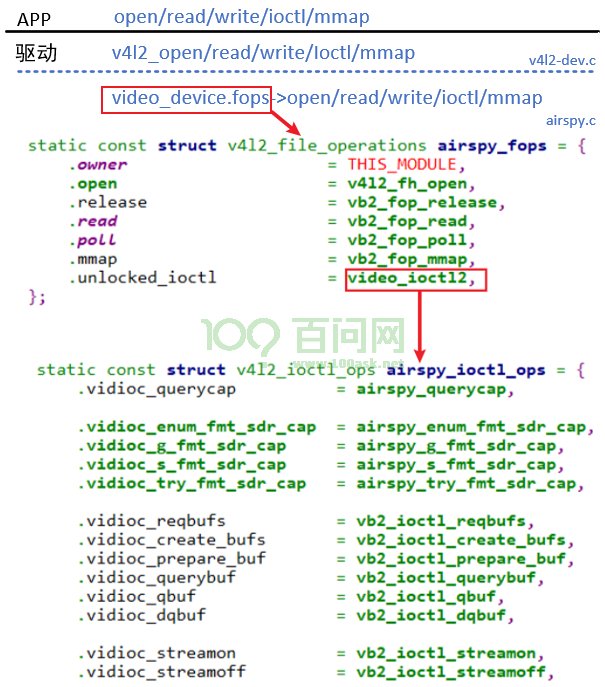
1.1 V4L2驱动程序注册流程#
参考drivers\media\usb\airspy\airspy.c：
static struct video_device airspy_template = {
.name = "AirSpy SDR",
.release = video_device_release_empty,
.fops = &airspy_fops,
.ioctl_ops = &airspy_ioctl_ops,
};
// 分配/设置video_device结构体
s->vdev = airspy_template;
// 初始化一个v4l2_device结构体(起辅助作用)
/* Register the v4l2_device structure */
s->v4l2_dev.release = airspy_video_release;
ret = v4l2_device_register(&intf->dev, &s->v4l2_dev);
// video_device和4l2_device建立联系
s->vdev.v4l2_dev = &s->v4l2_dev;
// 注册video_device结构体
ret = video_register_device(&s->vdev, VFL_TYPE_SDR, -1);
__video_register_device
// 根据次设备号把video_device结构体放入数组
video_device[vdev->minor] = vdev;
// 注册字符设备驱动程序
vdev->cdev->ops = &v4l2_fops;
vdev->cdev->owner = owner;
ret = cdev_add(vdev->cdev, MKDEV(VIDEO_MAJOR, vdev->minor), 1);
1.2 ioctl调用流程分析#
1.2.1 两类ioctl#
底层驱动程序提供了很多ioctl的处理函数，比如：
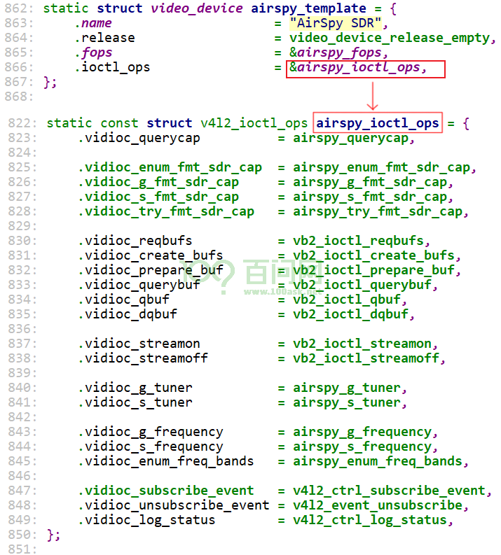
这些ioctl被分为2类：
INFO_FL_STD：标准的，无需特殊的代码来处理，APP的调用可以直达这些处理函数
INFO_FL_FUNC：这类ioctl需要特殊处理，比如对于
VIDIOC_ENUM_FMT，它需要根据设备的类型分别枚举：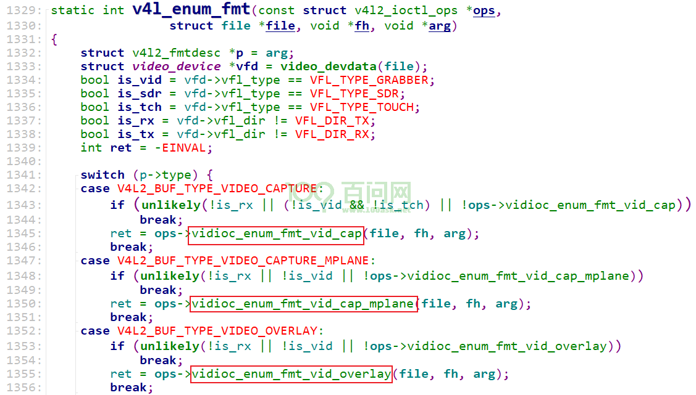
简单地说，这2类ioctl的差别在于：
INFO_FL_STD：APP发出的ioctl直接调用底层的video_device->ioctl_ops->xxxx(….)
INFO_FL_FUNC：APP发出的ioctl，交给
drivers\media\v4l2-core\v4l2-ioctl.c，它先进行一些特殊处理后，再调用底层的video_device->ioctl_ops->xxxx(….)
怎么区分这些ioctl呢？drivers\media\v4l2-core\v4l2-ioctl.c中有个数组：
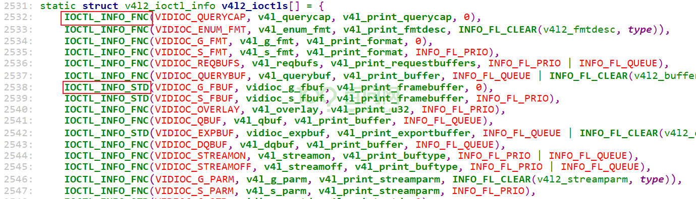
这个数组里，每一项都表示一个ioctl：
使用
IOCTL_INFO_FNC定义的数组项，表示它是INFO_FL_FUNC类型的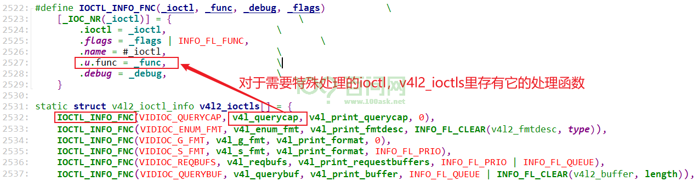
使用
IOCTL_INFO_STD定义的数组项，表示它是INFO_FL_STD类型的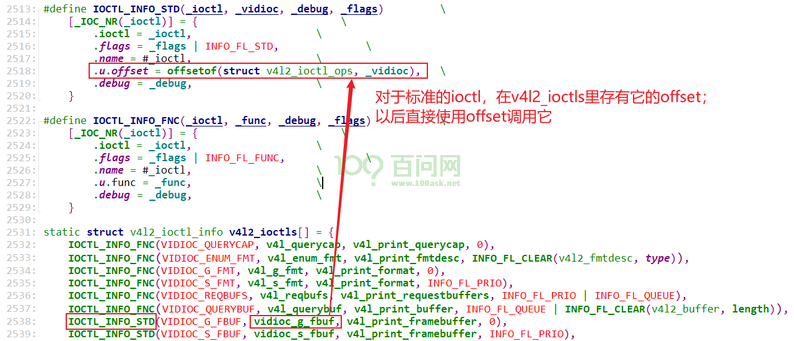
1.2.2 调用流程#
APP调用摄像头的ioctl，流程为：
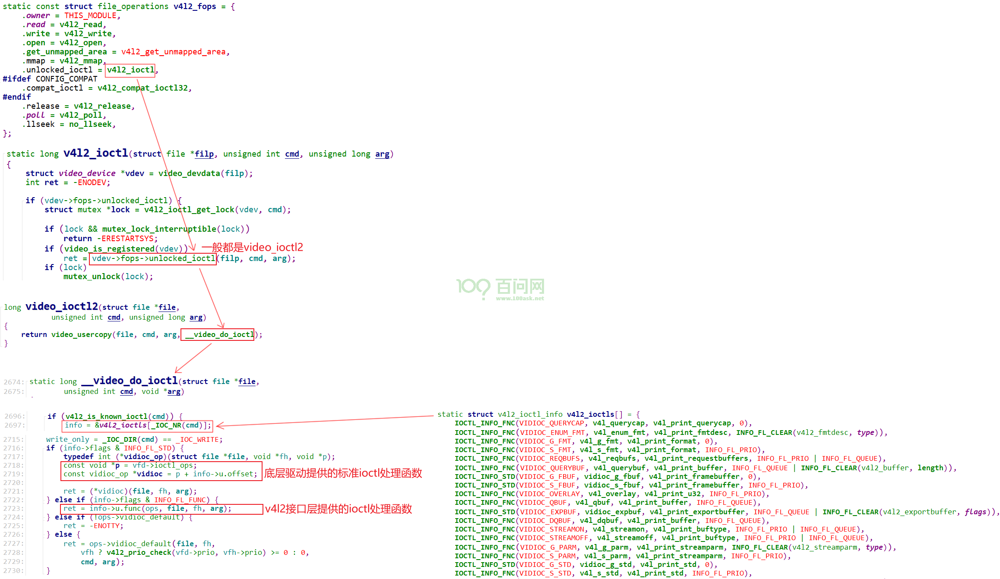
1.3 buffer的内核实现#
APP操作buffer的示意图如下：
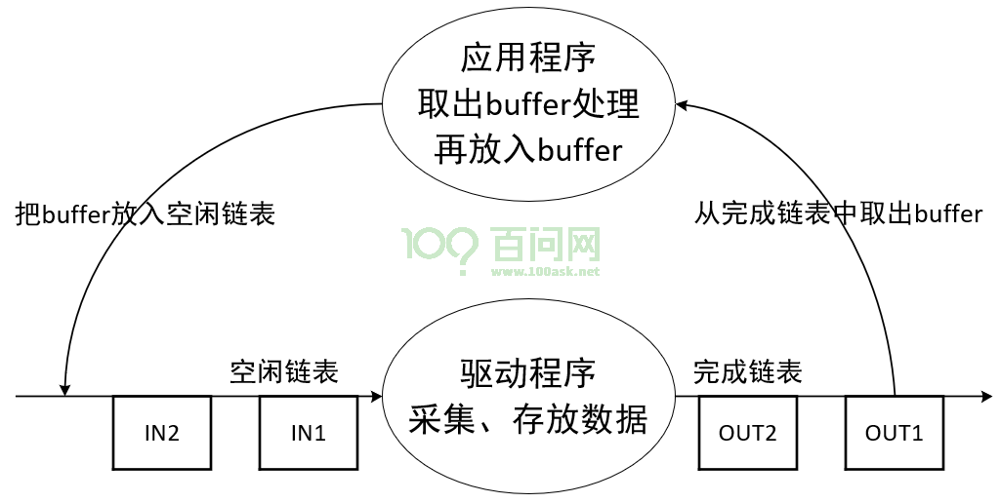
驱动程序中如何管理这些buffer呢？
1.3.1 videobuffer2缓冲区结构体#
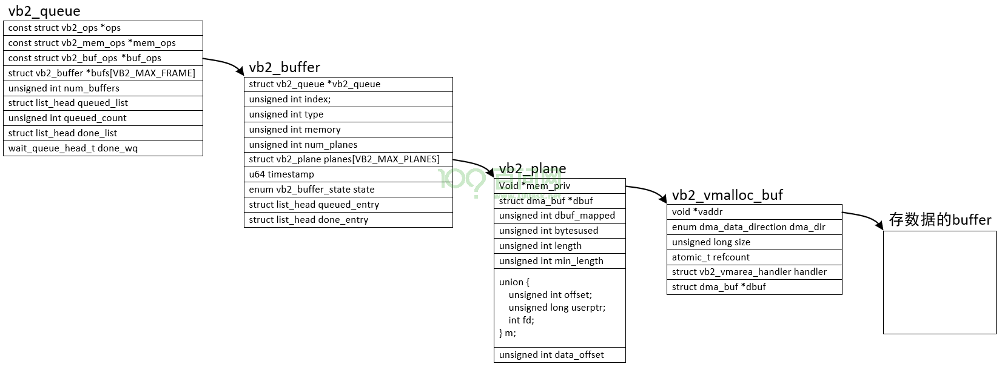
分配流程：
驱动程序初始化时，就构造了vb2_queue，这是”buffer的队列”，一开始里面没有”buffer”
APP调用ioctl VIDIOC_REQBUFS向驱动申请N个buffer
驱动程序分配n(n<=N)个vb2_buffer结构体，然后
对于普通摄像头，还分配一个vb2_plane结构体、vb2_vmalloc_buf结构体，最后分配存数据的buffer
对于多平面摄像头，给每个vb2_buffer分配多个”vb2_plane结构体、vb2_vmalloc_buf结构体、存数据的buffer”
入队列流程：
APP调用ioctl VIDIOC_QBUF
驱动程序根据其index找到vb2_buffer
把这个vb2_buffer放入链表vb2_queue.queued_list
硬件驱动接收到数据后，比如URB传输完成后：
从链表vb2_queue.queued_list找到(但是不移除)vb2_buffer
把硬件数据存入vb2_buffer
把vb2_buffer放入链表vb2_queue.done_list
出队列流程：
APP调用ioctl VIDIOC_DQBUF
驱动程序从链表vb2_queue.done_list取出并移除第1个vb2_buffer
驱动程序也把这个vb2_buffer从链表vb2_queue.queued_list移除
1.3.2 videobuffer2的3个ops#
V4L2中使用vb2_queue来管理缓冲区，里面有3个操作结构体：
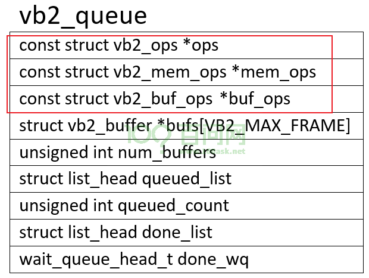
这3个操作结构体的作用为：
const struct vb2_buf_ops *buf_ops：在用户空间、内核空间之间传递buffer信息，通过下面几个宏来调用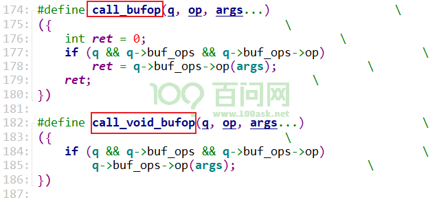
const struct vb2_mem_ops *mem_ops：分配内存用的回调函数，通过下面几个宏来调用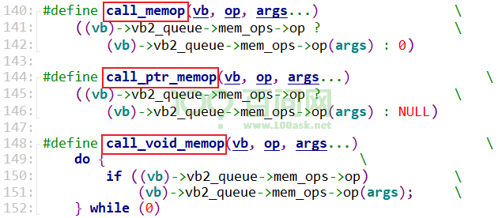
const struct vb2_ops *ops：硬件相关的回调函数，通过下面几个宏来调用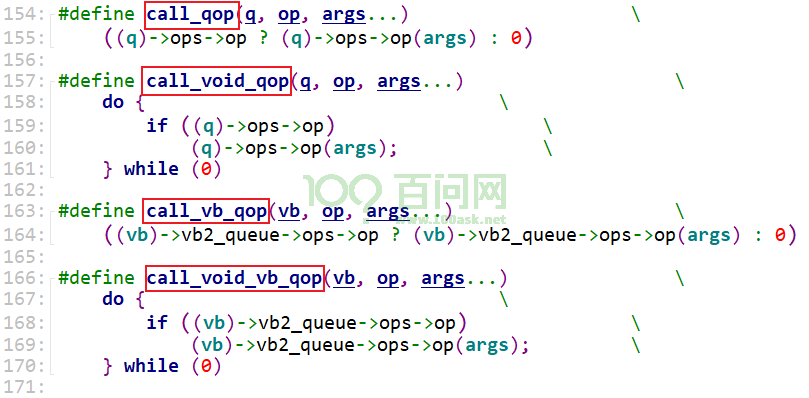
这3个ops的层次图如下：
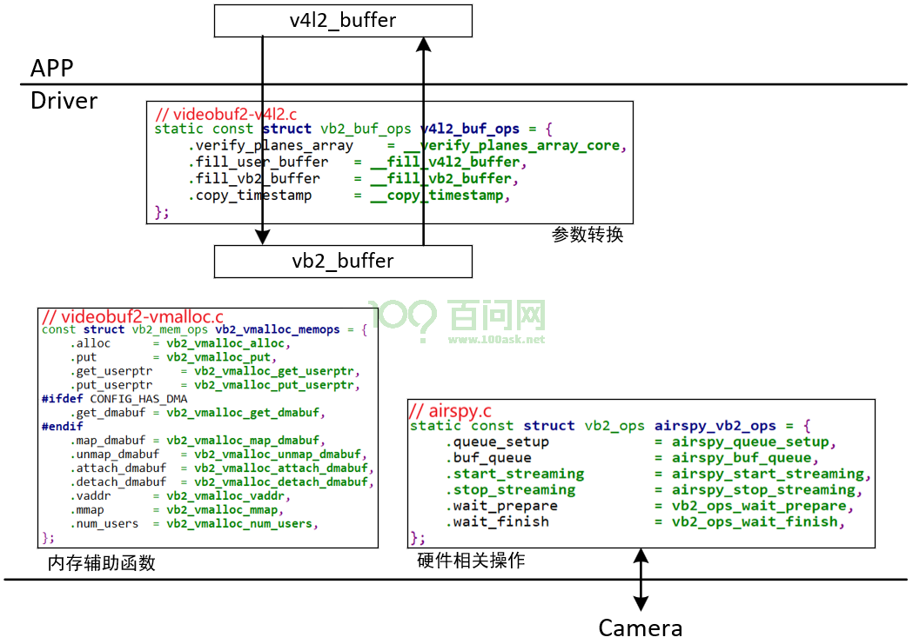
完整的注册流程(参考drivers\media\usb\airspy\airspy.c)：
static struct video_device airspy_template = {
.name = "AirSpy SDR",
.release = video_device_release_empty,
.fops = &airspy_fops,
.ioctl_ops = &airspy_ioctl_ops,
};
/* 构造一个vb2_queue */
/* Init videobuf2 queue structure */
s->vb_queue.type = V4L2_BUF_TYPE_SDR_CAPTURE;
s->vb_queue.io_modes = VB2_MMAP | VB2_USERPTR | VB2_READ;
s->vb_queue.drv_priv = s;
s->vb_queue.buf_struct_size = sizeof(struct airspy_frame_buf);
s->vb_queue.ops = &airspy_vb2_ops; // vb2_ops, 硬件相关的操作函数
s->vb_queue.mem_ops = &vb2_vmalloc_memops; // vb2_mem_ops, 辅助结构体,用于mem ops(alloc、mmap)
s->vb_queue.timestamp_flags = V4L2_BUF_FLAG_TIMESTAMP_MONOTONIC;
ret = vb2_queue_init(&s->vb_queue);
q->buf_ops = &v4l2_buf_ops; // vb2_buf_ops, 用于APP和驱动传递参数
// 分配/设置video_device结构体
s->vdev = airspy_template;
s->vdev.queue = &s->vb_queue; // 指向前面构造的vb2_queue
// 初始化一个v4l2_device结构体(起辅助作用)
/* Register the v4l2_device structure */
s->v4l2_dev.release = airspy_video_release;
ret = v4l2_device_register(&intf->dev, &s->v4l2_dev);
// video_device和4l2_device建立联系
s->vdev.v4l2_dev = &s->v4l2_dev;
// 注册video_device结构体
ret = video_register_device(&s->vdev, VFL_TYPE_SDR, -1);
__video_register_device
// 根据次设备号把video_device结构体放入数组
video_device[vdev->minor] = vdev;
// 注册字符设备驱动程序
vdev->cdev->ops = &v4l2_fops;
vdev->cdev->owner = owner;
ret = cdev_add(vdev->cdev, MKDEV(VIDEO_MAJOR, vdev->minor), 1);
1.3.3 vb2_buf_ops#
struct vb2_buf_ops示例如下：
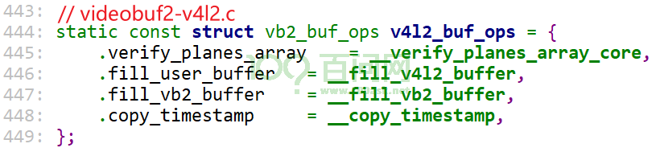
原型如下：
struct vb2_buf_ops {
int (*verify_planes_array)(struct vb2_buffer *vb, const void *pb);
void (*fill_user_buffer)(struct vb2_buffer *vb, void *pb);
int (*fill_vb2_buffer)(struct vb2_buffer *vb, const void *pb,
struct vb2_plane *planes);
void (*copy_timestamp)(struct vb2_buffer *vb, const void *pb);
};
各成员的作用为：
vb2_buf_ops结构体成员 |
作用 |
|---|---|
verify_planes_array |
APP调用ioctl VIDIOC_DQBUF时，在驱动内部会调用此函数，用来验证这个buffer含有足够多的plane。 |
fill_user_buffer |
使用驱动的vb2_buffer结构体来填充一个v4l2_buffer结构体，用来给用户空间提供更多信息。APP调用ioctl VIDIOC_QUERYBUF、VIDIOC_PREPARE_BUF、VIDIOC_QBUF、VIDIOC_DQBUF时，都会传入一个v4l2_buffer结构体。 |
fill_vb2_buffer |
APP调用ioctl VIDIOC_QBUF时，传入一个v4l2_buffer结构体，驱动里会用它来填充vb2_buffer结构体。 |
copy_timestamp |
APP调用ioctl VIDIOC_QBUF时，传入一个v4l2_buffer结构体，用户程序可以在它的timestamp里记下时间。驱动程序可以调用此函数把timestamp写入vb2_buffer.timestamp里。 |
1.3.4 vb2_mem_ops#
struct vb2_mem_ops示例如下：
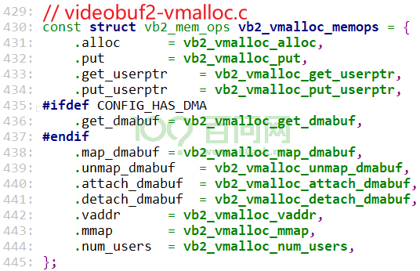
原型如下：
struct vb2_mem_ops {
void *(*alloc)(struct device *dev, unsigned long attrs,
unsigned long size,
enum dma_data_direction dma_dir,
gfp_t gfp_flags);
void (*put)(void *buf_priv);
struct dma_buf *(*get_dmabuf)(void *buf_priv, unsigned long flags);
void *(*get_userptr)(struct device *dev, unsigned long vaddr,
unsigned long size,
enum dma_data_direction dma_dir);
void (*put_userptr)(void *buf_priv);
void (*prepare)(void *buf_priv);
void (*finish)(void *buf_priv);
void *(*attach_dmabuf)(struct device *dev,
struct dma_buf *dbuf,
unsigned long size,
enum dma_data_direction dma_dir);
void (*detach_dmabuf)(void *buf_priv);
int (*map_dmabuf)(void *buf_priv);
void (*unmap_dmabuf)(void *buf_priv);
void *(*vaddr)(void *buf_priv);
void *(*cookie)(void *buf_priv);
unsigned int (*num_users)(void *buf_priv);
int (*mmap)(void *buf_priv, struct vm_area_struct *vma);
};
各成员的作用为：
vb2_mem_ops结构体成员 |
作用 |
|---|---|
alloc |
分配真正用于存储视频数据的buffer，可能还分配私有数据 |
put |
通知分配器：这块buffer不再使用了。通常会释放内存。 |
get_dmabuf |
获得DMA BUF给底层驱动使用 |
get_userptr |
如果存储视频数据的buffer是userptr（由APP提供），那么APP调用ioctl VIDIOC_QBUF时，需要传入APP的buffer指针。驱动程序内部通过此函数把用户空间的buffer映射到内核空间。 |
put_userptr |
通知分配器：这块USERPTR缓冲区不再使用 |
attach_dmabuf |
如果存储视频数据的buffer是DMA Buf，那么在把这个buffer放入队列前会调用此函数：记录这个DMA Buf。 |
detach_dmabuf |
不再使用这个DMA Buf时，做些清理工作（比如在attach_dmabuf里分配了数据，就在这里释放掉） |
map_dmabuf |
把DMA Buf映射到内核空间 |
unmap_dmabuf |
map_dmabuf的反操作 |
prepare |
每当buffer被从用户空间传递到驱动时，此函数被调用，可以用来做某些同步操作。可选。 |
finish |
每当buffer被从驱动传递到用户空间时，此函数被调用，可以用来做某些同步操作。可选。 |
vaddr |
返回这块内存的内核空间地址 |
cookie |
没什么用 |
num_users |
返回这块内存的引用计数 |
mmap |
把这块内存，映射到用户空间 |
1.3.5 vb2_ops#
struct vb2_ops示例如下：
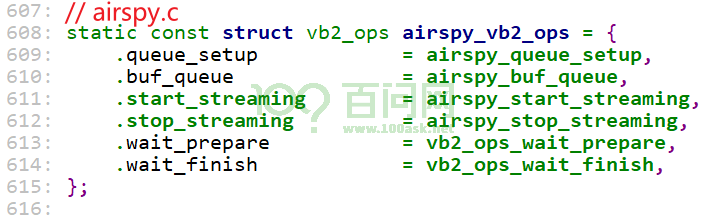
原型如下：
struct vb2_ops {
int (*queue_setup)(struct vb2_queue *q,
unsigned int *num_buffers, unsigned int *num_planes,
unsigned int sizes[], struct device *alloc_devs[]);
void (*wait_prepare)(struct vb2_queue *q);
void (*wait_finish)(struct vb2_queue *q);
int (*buf_init)(struct vb2_buffer *vb);
int (*buf_prepare)(struct vb2_buffer *vb);
void (*buf_finish)(struct vb2_buffer *vb);
void (*buf_cleanup)(struct vb2_buffer *vb);
int (*start_streaming)(struct vb2_queue *q, unsigned int count);
void (*stop_streaming)(struct vb2_queue *q);
void (*buf_queue)(struct vb2_buffer *vb);
};
各成员的作用为：
vb2_ops结构体成员 |
作用 |
|---|---|
queue_setup |
APP调用ioctl VIDIOC_REQBUFS或VIDIOC_CREATE_BUFS时， |
wait_prepare |
释放驱动自己的互斥锁 |
wait_finish |
申请驱动自己的互斥锁 |
buf_init |
分配vb2_buffer及它内部存储数据的buffer后，使用buf_init进行驱动相关的初始化 |
buf_prepare |
APP调用ioctl VIDIOC_QBUF或VIDIOC_PREPARE_BUF时，驱动程序会在执行硬件操作前，调用此函数进行必要的初始化。 |
buf_finish |
APP调用ioctl VIDIOC_DQBUF后，在驱动程序返回用户空间之前，会调用此函数，可以在这个函数里修改buffer。或者驱动程序内部停止或暂停streaming时，也会调用此函数。 |
buf_cleanup |
在buffer被释放前调用，驱动程序在这个函数里执行额外的清除工作。 |
start_streaming |
驱动相关的”启动streaming”函数 |
stop_streaming |
驱动相关的”停止streaming”函数 |
buf_queue |
把buffer传送给驱动，驱动获得数据、填充好buffer后会调用vb2_buffer_done函数返还buffer。 |
1.3.6 videobuffer2情景分析#
情景分析1：申请buffer
APP ioctl VIDIOC_REQBUFS
------------------------------
v4l_reqbufs // v4l2-ioctl.c
ops->vidioc_reqbufs(file, fh, p);
vb2_ioctl_reqbufs // videobuf2-v4l2.c
vb2_core_reqbufs
/*
* Ask the driver how many buffers and planes per buffer it requires.
* Driver also sets the size and allocator context for each plane.
*/
/* 调用硬件相关的vb2_ops.queue_setup，确认需要多少个buffer、每个buffer里有多少个plane */
ret = call_qop(q, queue_setup, q, &num_buffers, &num_planes,
plane_sizes, q->alloc_devs);
/* Finally, allocate buffers and video memory */
allocated_buffers =
__vb2_queue_alloc(q, memory, num_buffers, num_planes, plane_sizes);
ret = __vb2_buf_mem_alloc(vb);
// 调用vb2_mem_ops.alloc分配内存
mem_priv = call_ptr_memop(vb, alloc,
q->alloc_devs[plane] ? : q->dev,
q->dma_attrs, size, dma_dir, q->gfp_flags);
/* 驱动想得到M个buffer，但是可能只分配了N个buffer，可以吗？问驱动
* 再次调用硬件相关的vb2_ops.queue_setup，确认已经分配的buffer个数、每个buffer的plane个数是否符合硬件需求
*/
ret = call_qop(q, queue_setup, q, &num_buffers,
&num_planes, plane_sizes, q->alloc_devs);
情景分析2：把buffer放入队列
APP ioctl VIDIOC_QBUF
------------------------------
v4l_qbuf // v4l2-ioctl.c
ops->vidioc_qbuf(file, fh, p);
vb2_ioctl_qbuf // videobuf2-v4l2.c
vb2_qbuf(vdev->queue, p); // videobuf2-v4l2.c
vb2_core_qbuf(q, b->index, b); // videobuf2-core.c
ret = __buf_prepare(vb, pb);
ret = __qbuf_mmap(vb, pb); // videobuf2-core.c
if (pb) // 调用vb2_buf_ops.fill_vb2_buffer, 使用APP传入的v4l2_buffer来设置驱动的vb2_buffer
ret = call_bufop(vb->vb2_queue, fill_vb2_buffer,
vb, pb, vb->planes);
// 硬件相关的vb2_ops.buf_prepare, 对buffer做些准备工作
return ret ? ret : call_vb_qop(vb, buf_prepare, vb);
// 把buffer放入空闲链表
list_add_tail(&vb->queued_entry, &q->queued_list);
if (pb) // 调用vb2_buf_ops.copy_timestamp, 使用APP传入的v4l2_buffer来设置驱动的vb2_buffer
call_void_bufop(q, copy_timestamp, vb, pb);
/*
* If already streaming, give the buffer to driver for processing.
* If not, the buffer will be given to driver on next streamon.
*/
if (q->start_streaming_called)
__enqueue_in_driver(vb);
/* sync buffers */
for (plane = 0; plane < vb->num_planes; ++plane)
// 调用vb2_mem_ops.prepare做准备
call_void_memop(vb, prepare, vb->planes[plane].mem_priv);
// 调用硬件相关的vb2_ops.buf_queue把buffer传送给驱动
call_void_vb_qop(vb, buf_queue, vb);
/* Fill buffer information for the userspace */
if (pb) // 调用vb2_buf_ops.fill_user_buffer, 使用驱动的vb2_buffer为APP设置v4l2_buffer
call_void_bufop(q, fill_user_buffer, vb, pb);
/*
* If streamon has been called, and we haven't yet called
* start_streaming() since not enough buffers were queued, and
* we now have reached the minimum number of queued buffers,
* then we can finally call start_streaming().
*/
if (q->streaming && !q->start_streaming_called &&
q->queued_count >= q->min_buffers_needed) {
ret = vb2_start_streaming(q);
/*
* If any buffers were queued before streamon,
* we can now pass them to driver for processing.
*/
list_for_each_entry(vb, &q->queued_list, queued_entry)
__enqueue_in_driver(vb);
/* sync buffers */
for (plane = 0; plane < vb->num_planes; ++plane)
// 调用vb2_mem_ops.prepare做准备
call_void_memop(vb, prepare, vb->planes[plane].mem_priv);
// 调用硬件相关的vb2_ops.buf_queue把buffer传送给驱动
call_void_vb_qop(vb, buf_queue, vb);
/* Tell the driver to start streaming */
q->start_streaming_called = 1;
// 调用硬件相关的vb2_ops.start_streaming启动硬件传输
ret = call_qop(q, start_streaming, q,
atomic_read(&q->owned_by_drv_count));
情景分析3：把buffer取出队列
APP ioctl VIDIOC_DQBUF
------------------------------
v4l_dqbuf // v4l2-ioctl.c
ops->vidioc_dqbuf(file, fh, p);
vb2_ioctl_dqbuf // videobuf2-v4l2.c
vb2_dqbuf(vdev->queue, p, file->f_flags & O_NONBLOCK);
ret = vb2_core_dqbuf(q, NULL, b, nonblocking);
ret = __vb2_get_done_vb(q, &vb, pb, nonblocking);
ret = __vb2_wait_for_done_vb(q, nonblocking);
call_void_qop(q, wait_prepare, q);
wait_event_interruptible
call_void_qop(q, wait_finish, q);
*vb = list_first_entry(&q->done_list, struct vb2_buffer, done_entry);
if (pb)
ret = call_bufop(q, verify_planes_array, *vb, pb);
__verify_planes_array_core
__verify_planes_array(vb, pb);
if (!ret)
list_del(&(*vb)->done_entry);
call_void_vb_qop(vb, buf_finish, vb);
/* go back to dequeued state */
__vb2_dqbuf(vb);
call_void_memop(vb, unmap_dmabuf, vb->planes[i].mem_priv);
vb2_vmalloc_unmap_dmabuf
dma_buf_vunmap(buf->dbuf, buf->vaddr);